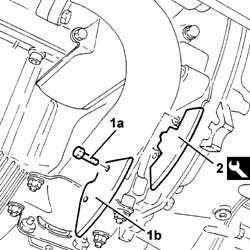
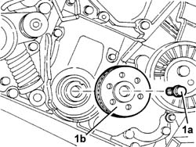

1032B44 TOOTHED DRIVE PULLEY - R.R. with timing belt removed
- Path
- Procedures > 10 ENGINE > 1032 timing system > 1032B BELT-DRIVEN TIMING SYSTEM > 1032B44 TOOTHED DRIVE PULLEY - R.R. with timing belt removed
- Kind
- repair procedure (removal / refitting; the operation number is the code)
- Applies to
- engines: 2.4 JTD 10V; all production periods
- Interactive page
- https://sloeber94.github.io/elrnDB-lThss/en/#/75721
Applies to: all engines; all production periods
 Removing
Removing
 Refitting
Refitting1. Undo the fixing bolts (1a) and remove the flywheel guard (1b).
2. Fit the flywheel lock.
 | Description | Code | Function |
|---|---|---|---|
2 | Flywheel lock | 1.860.898.000 | Lock crankshaft |

Applies to: all engines; all production periods
1. Undo the fixing bolt with the left hand thread (1a) and remove the spacer and the tooghted drive pulley (1b).

Applies to: all engines; all production periods
Refitting
Removing- Fit the toothed drive pulley complete with spacer and fasten it tightening the bolt to torque.
- Tighten the bolt fixing the pulley to the crankshaft to torque.
 | Value - daNm | Fastening | Component | Ø |
|---|---|---|---|---|
. | 34 | Bolt | DRIVE PULLEY(PULLIES) TIMING | M16 |
- Remove the flywheel lock.
| Description | Code | Function |
|---|---|---|---|
. | Flywheel lock | 1.860.898.000 | Lock crankshaft |
- Position the flywheel guard and tighten the fixing bolts.